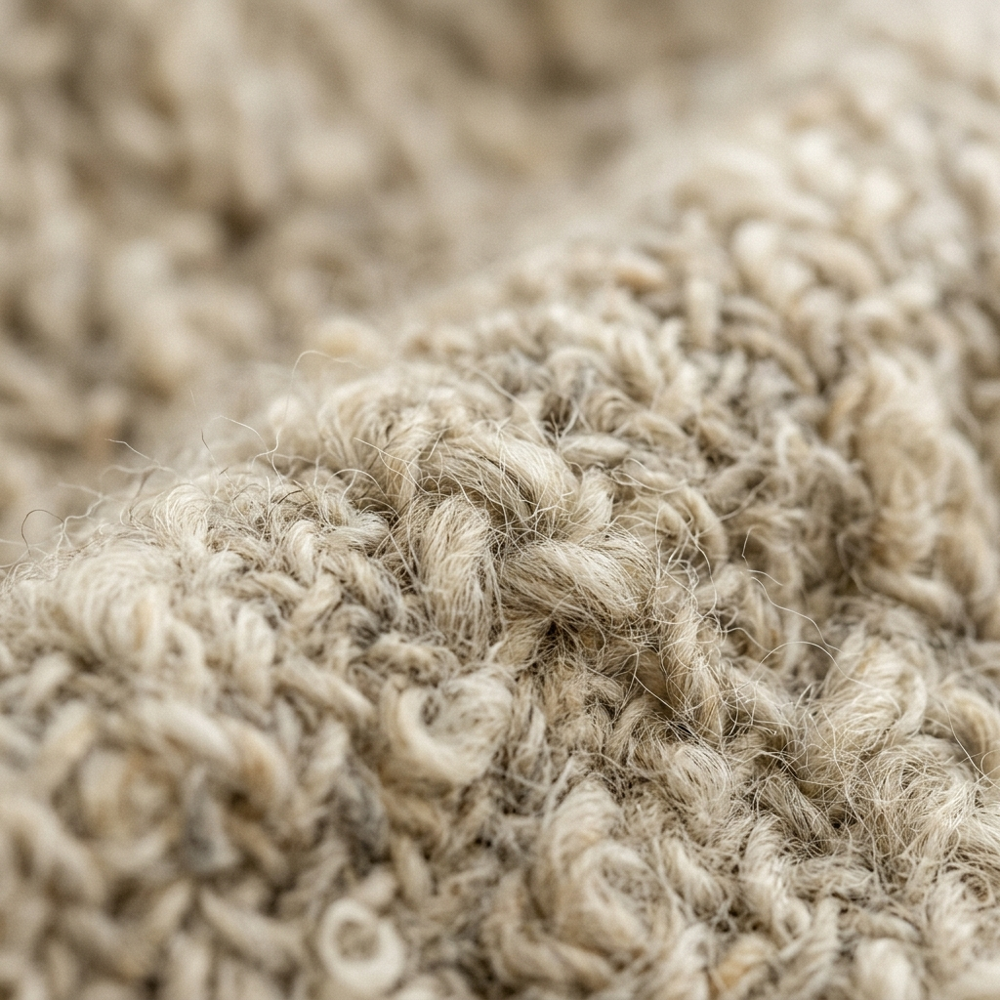
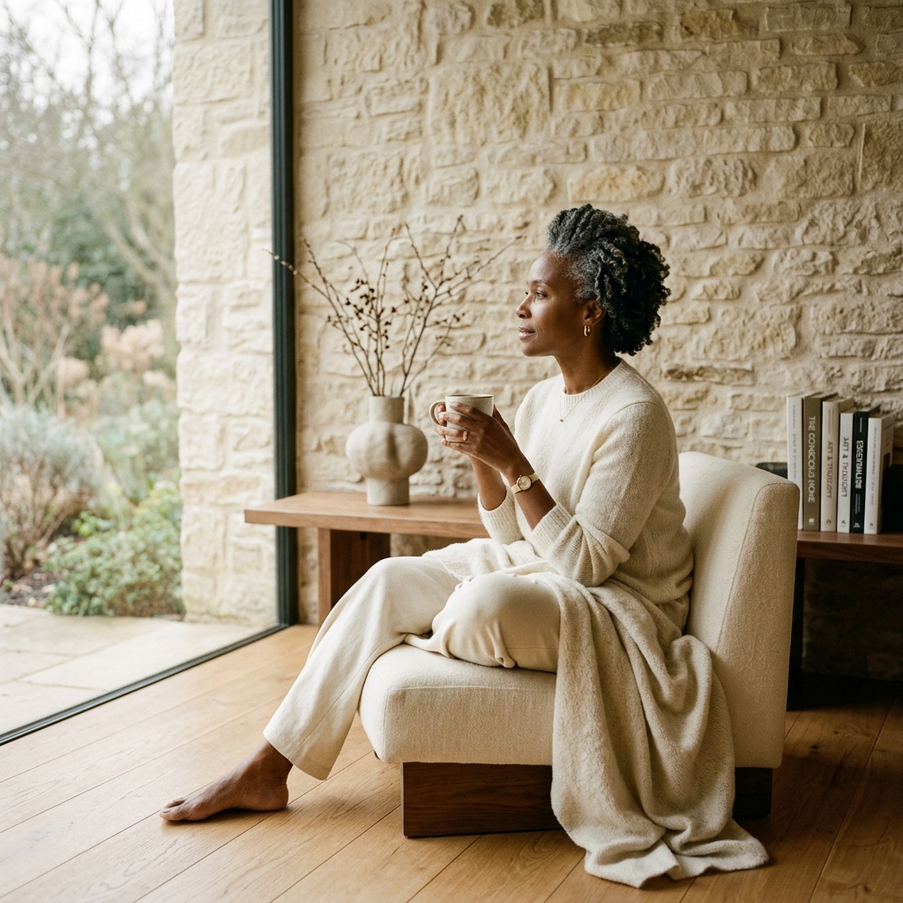

EL CARÁCTER
DE LA PIEDRA
LA CULTURA QUE NOS MOLDEA

"El frío nos enseñó que vestirse no es vanidad: es resiliencia. Y de esa resiliencia nació nuestra elegancia."


HERENCIA
VIVA
LA RUANA COMO PUNTO DE PARTIDA
La ruana boyacense no es folclor — es ingeniería textil ancestral. Una pieza sin costuras, sin botones, sin cierre. Pura geometría funcional que protege del frío del páramo desde hace siglos.
LANNA toma esa herencia y la traduce al lenguaje contemporáneo: siluetas limpias, proporciones actualizadas, acabados de lujo. La esencia permanece; la forma evoluciona.
Cada prenda LANNA es un puente entre generaciones — entre la abuela que tejía en Nobsa y el profesional que camina por la Séptima.


IDENTIDAD
DE MARCA
NUESTRA ESENCIA VISUAL
LANNA viene de "lana" — materia prima, identidad, propósito. El nombre es directo, sin artificio. Como nuestras prendas: lo que ves es lo que es. Cada letra separada refleja la pausa, el espacio, el silencio que define el lujo verdadero.
Autenticidad
Origen real, procesos transparentes, materiales honestos.
Permanencia
Piezas diseñadas para durar décadas, no temporadas.
Silencio
Sin logos visibles, sin gritos. El lujo habla bajo.



MOODBOARD
EL ORIGEN DE TODO
Nuestras fuentes de inspiración
Fotógrafo: Díaz Hernán
QUIET LUXURY
EL LUJO SILENCIOSO
El Quiet Luxury rechaza logotipos, tendencias pasajeras y ostentación. El valor está en lo que se siente: el peso de la tela, la precisión del corte, la durabilidad intergeneracional.
Referentes | Brunello Cucinelli · Loro Piana · The Row
Donde ellos usan cachemira italiana, nosotros usamos lana virgen cundiboyacense.
Donde ellos tienen tintes de laboratorio, nosotros tenemos cáscara de nogal.
Los colores del páramo — crudo, gris, verde musgo, marrón — son nuestra paleta natural de lujo.
Colores sólidos y profundos, piezas limpias y con pocas costuras, visualmente rico y sofisticado; invita a ser tocado.
UNA ARMADURA
SILENCIOSA
CÓMO, CUÁNDO Y DÓNDE SE USA
Ocasiones:
Reuniones profesionales · eventos culturales · viajes de montaña · uso diario sofisticado.
Clima:
Pensadas para 8–16 °C — Bogotá, Tunja, Paipa, cualquier ciudad donde el frío sea parte de la identidad.
Estilo:
En capas, tonos neutros, sin accesorios que compitan con la prenda. El protagonismo es silencioso: el corte, la textura, la caída hacen el trabajo.
QUIÉNES SOMOS
MISIÓN, VISIÓN Y EQUIPO
Misión:
Crear prendas elegantes inspiradas en el Altiplano Cundiboyacense, con enfoque sostenible integrado — desde el pastoreo hasta el patronaje.
Visión:
Consolidar una marca que combine tradición, diseño contemporáneo y permanencia. Una prenda LANNA nunca pasa de moda.